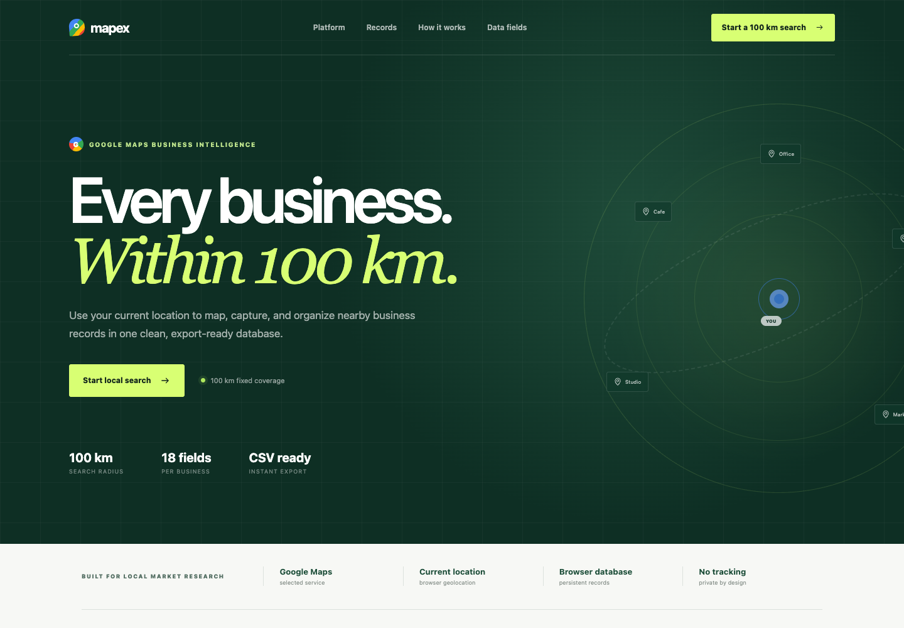
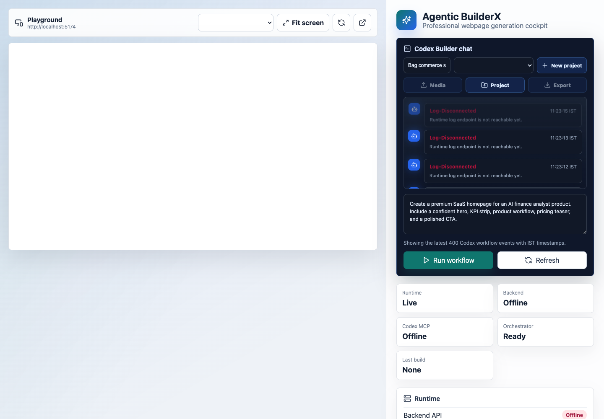
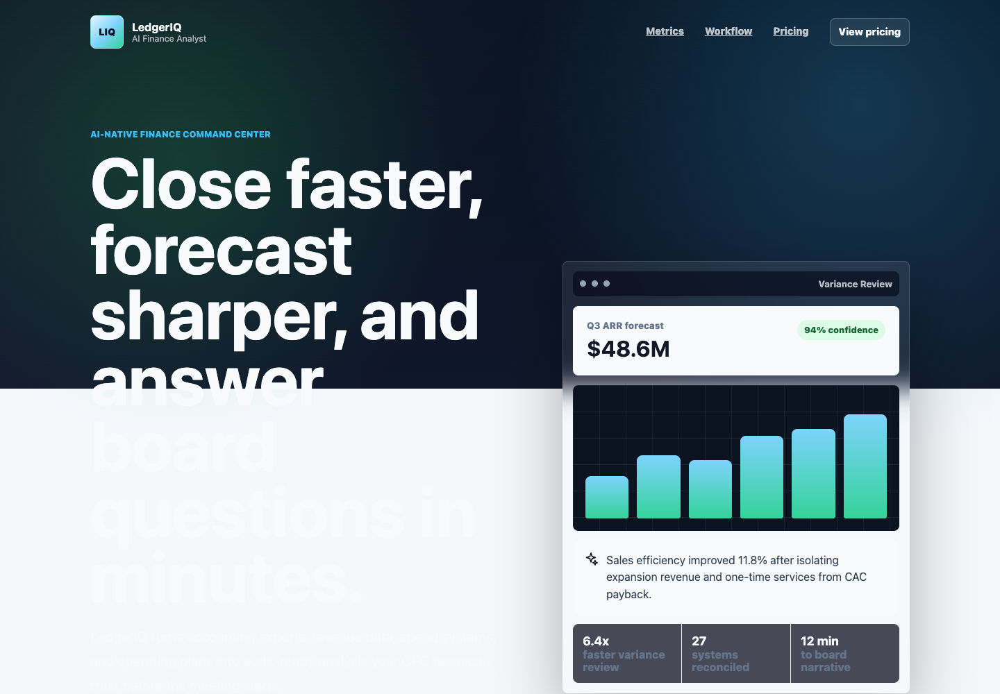

A Codex-powered application builder that turns a plain-language brief into a project-scoped team of agents, an isolated workspace, a live preview, and an exportable full-stack package.

BuilderX manages the work around generation too: project boundaries, specialist coordination, live execution, iteration, media context, existing-project import, and deployment handoff.
The orchestrator reads the instruction, identifies the product type and sections, and prepares a structured request.
Each project receives a distinguishable orchestrator plus relevant UI, content, data, commerce, media, or packaging specialists.
Generated apps live as detachable sibling folders under the root workspace, with a dedicated runtime port and project identity.
The Run workflow action sends the selected project's instruction and media context to Codex and reports progress in the runtime log.
The project dropdown selects the active app; the Playground follows its assigned localhost address without mixing project state.
Download source with frontend, backend, PostgreSQL service, environment configuration, Dockerfiles, and Compose orchestration.
BuilderX creates a clearly named folder and reserves an exclusive port.
Write the product, audience, sections, tone, data needs, and interactions in normal language.
Attach images or media, or import an existing zipped project that needs enhancement.
The project orchestrator assigns specialists and Codex edits the selected workspace.
Use the live Playground, iterate with another instruction, then export the complete app.

The selected project controls the preview URL and port.
Send a new build or a focused revision directly to Codex.
Add visual references or bring an existing application into the same managed workflow.
See connection state, build progress, file changes, and runtime refresh events.
Package the selected project instead of exporting an unrelated global build.

Generated from a concise brief requesting a premium SaaS homepage with a hero, KPI strip, workflow, pricing teaser, and polished call to action.
Dark analytical canvas, bright data accents, dense financial UI, and clear navigation.
Strong headline paired with forecast confidence, variance review, and operational metrics.
Generated as its own named workspace with source that can be iterated independently.
Mapex demonstrates range: a location-based business research product with an expressive search-radius visual, clear data promise, and export-focused positioning.
Grid structure, radar rings, local markers, and a precise high-contrast action system.
The value proposition, coverage, captured fields, and CSV output are understandable immediately.
Brand language, information architecture, typography, and interaction cues adapt to the product domain.
The orchestrator does not treat every instruction as the same job. It creates a project relationship model, assigns relevant specialists, and keeps that topology available to the D3/Neo4j system view.
A detachable project folder under the root workspace.
A preview address that belongs only to that project.
Instructions and uploaded media target the active app.
Relationships are stored as project ownership and delegation links, making each project's agent graph distinguishable.
Edits real files in the selected project workspace.
Shows progress, changes, refresh, and completion.
D3 presents project-to-agent relationships for review.
The selected app is packaged with the components needed for local development and containerized deployment.
Each project lives outside the BuilderX app folder and is added to the root gitignore, so it can be detached or moved when needed.
Source files, environment placeholders, dependency manifests, and container definitions support future development rather than a screenshot-only handoff.
Import an existing zipped app, assign it a managed workspace and port, then use the same instruction-and-preview loop for enhancements.
Agentic BuilderX compresses the distance between describing a product and having a real codebase in front of you, while preserving the project boundaries and deployment artifacts serious work needs.